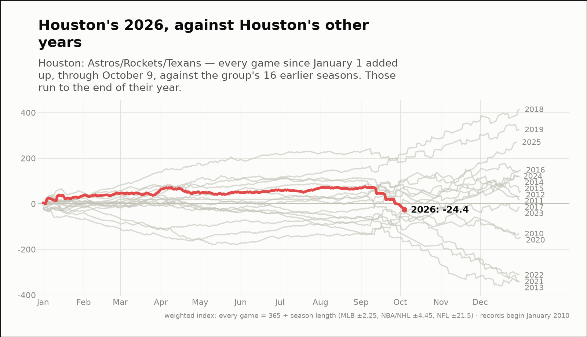
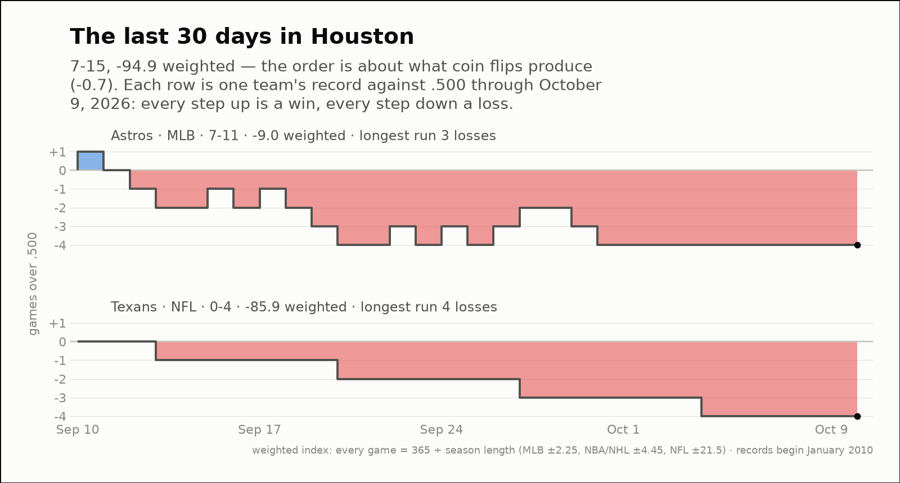

City of the day — Houston
Houston: Astros/Rockets/Texans
- 2026 so far
- 117-112, -24.4 weighted over 229 games; longest run 9 straight wins
- Order of results
- more alternating than chance (-2.5)
- Earlier seasons (full-year weighted)
- 2010 -130.7, 2011 +34.0, 2012 +55.4, 2013 -343.9, 2014 +122.5, 2015 +117.5, 2016 +149.2, 2017 +15.8, 2018 +414.9, 2019 +326.3, 2020 -148.1, 2021 -340.1, 2022 -311.7, 2023 -12.2, 2024 +138.2, 2025 +270.8
- Last 30 days
- 7-15, -94.9 weighted; longest run 4 straight losses
- Window opens
- September 10, 2026
| Team | Last 30 days | Weighted | Longest run |
|---|---|---|---|
| Astros | 7-11 | -9.0 | 3 straight losses |
| Texans | 0-4 | -85.9 | 4 straight losses |

